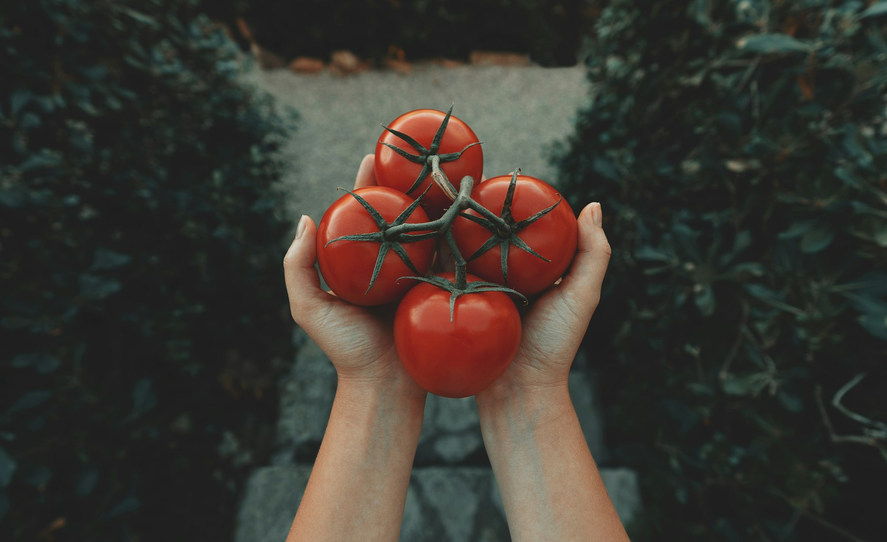
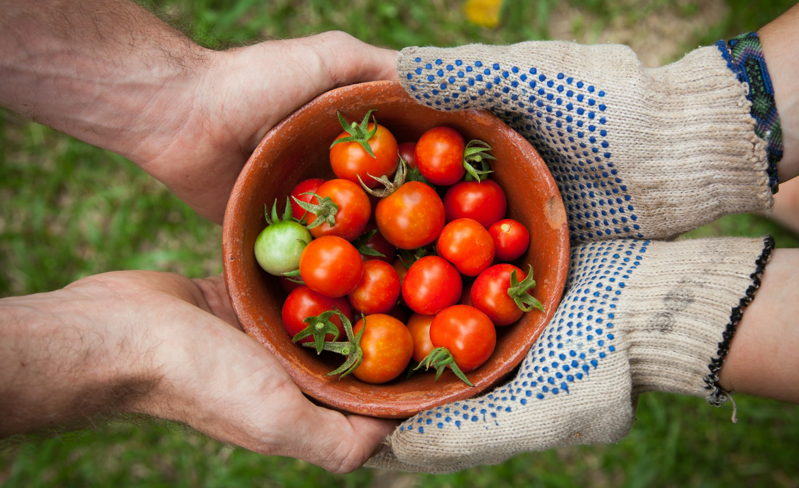

Everyone says "fresh". Here is the specific, checkable mechanic behind ours — including what happens when we get it wrong.
Not store credit. Not a coupon. Not a call with someone asking you to send more photos. You flag the item in the app, and it is replaced on the next run or refunded to your original payment method — whichever you pick, on the spot.
Nobody at Kasu is authorised to argue with a customer about a bad tomato. That authority doesn't exist here on purpose.
The checker picks the item themselves. They do not accept a pre-packed bag from a vendor — that's the single rule the whole model rests on.
Countable items are counted and rejects pulled before payment. Twelve tomatoes means twelve good ones, not twelve tomatoes.
Your exact basket is photographed at the stall, timestamped, and attached to your order before the rider is dispatched.
You have until 9pm the next day to flag anything. One tap, no form, no explanation required.

Not a stock photo of produce. The actual basket, at the actual stall, minutes before it left.
The vendor eats it. That's what being on the Kasu list costs, and it's why vendors are re-scored weekly.
Kasu eats it. A flagged item is a checker error, and it is tracked against the checker, not the customer.
You are not the quality control layer. If you have to inspect it, we've already failed at the thing you paid us for.
Spoilage is a real cost and we price it in rather than pretending it away. Roughly 4–6% of what we buy is rejected before it ever reaches a customer. That number is published on the vendors page and updated weekly.
A guarantee with no edges isn't a guarantee, it's marketing. These are ours: